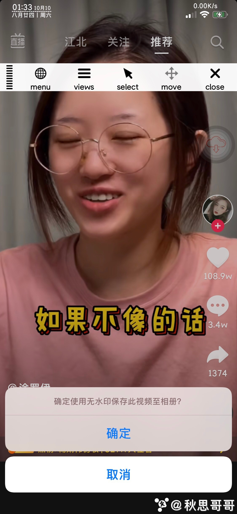

Trợ lý Douyin ™
Trợ lý Douyin ™ tạo ra để thêm một số chức năng vào Douyin.
- Tự động chuyển tiếp video
- Tải xuống video không watermark
- Không có quảng cáo
Tweak này cần phải có Jailbreak trên thiết bị.
Nếu bạn thích cách thức hoạt động của TikTokDP, hãy quyên góp cho tôi thông qua PayPal!
Theo dõi tôi Twitter.
Hình ảnh minh hoạ


Tương tích
- iOS 9+